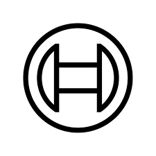
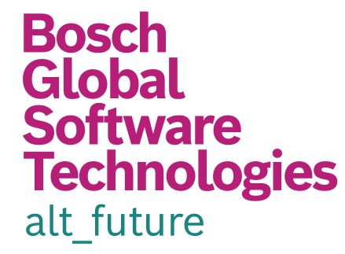

Professional Experience
3+ years of experience as a Machine Learning Engineer at Bosch, building and deploying ML systems across data science and platform engineering teams.
SocWebLab, Georgia Tech
Student Research Assistant ‐ advised by Prof. Munmun De Choudhury
Building UNVotePredictor, a cross-attention transformer that predicts how all 193 UN member states will vote on a resolution in a single forward pass, trained on nearly a million historical votes and reaching 87.75% weighted F1.
ISYE 6420 – Bayesian Statistics
Graduate Teaching Assistant
Graded homework submissions, maintained the course website, and wrote solutions for exam problems for the graduate Bayesian Statistics course ISYE 6420.

Bosch Digital Twin Industries
Machine Learning Engineer ‐ ADNOC Project
Built a multimodal ML and physics-based predictive maintenance system diagnosing 100+ faults across 20+ turbomachineries, and optimized time-series forecasting models for Remaining Useful Life prediction, which reduced unplanned downtime by avergae of 12%

Bosch Global Software Technologies
Machine Learning Engineer ‐ Automation Platform
Built backend microservices and a hybrid semantic search system for an internal document platform, and improved a metrics dashboard's load time by 10x, contributing to a $100K contract renewal.